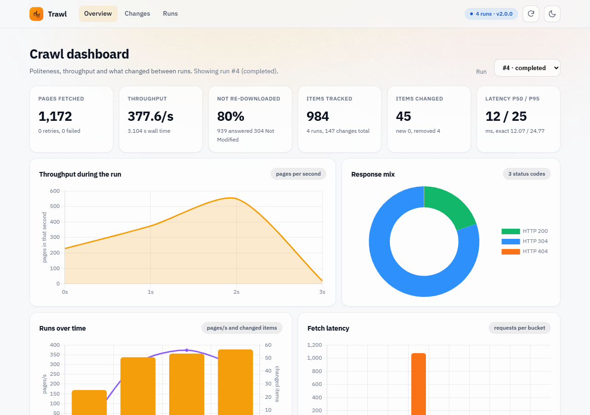

robots.txt, rate limits and re-crawls, built by hand
$ python -m trawl crawl --spec specs/books.yaml # 1000-book fixture, 1189 pages, 20 ms latency cold crawl, 16 workers 256 pages/s unchanged re-crawl 1000/1000 → 304, 63.8% bytes saved change detection precision 1.0, recall 1.0 token bucket 5/s observed 5.0/s injected 503s 134 → 0 failed pages
